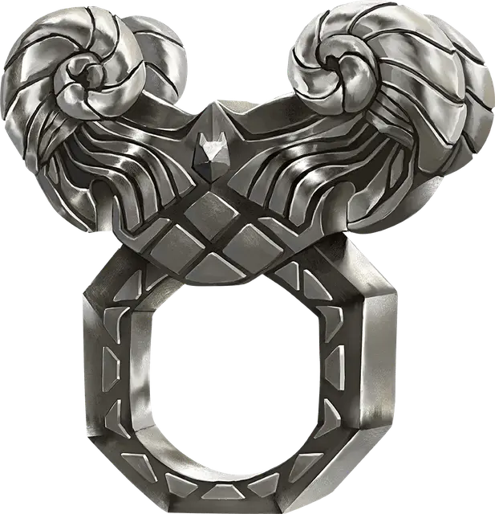

Кольцо барана
Ring of the Ram
Кольцо, редкое (требуется настройка)

Рекомендованная стоимость 4 000 ЗМ
Это кольцо имеет 3 заряда и восстанавливает 1к3 потраченных зарядов на каждом рассвете. Пока вы носите это кольцо, можете действием Магия потратить от 1 до 3 зарядов и совершить дальнобойную атаку заклинанием по одному видимому вами в пределах 60 футов от вас существу. Кольцо создаёт призрачную голову барана и совершает бросок атаки с бонусом +7; при попадании цель за каждый потраченный заряд получает 2к10 Силового урона и отталкивается от вас на 5 футов.
Вы можете также действием Магия потратить от 1 до 3 зарядов и попытаться разрушить видимый вами в пределах 60 футов от вас немагический объект, который никто не несёт и не носит. Кольцо совершает проверку Силы с бонусом +5 за каждый потраченный заряд.